<div class = "footer">
  </img>
  </img>
  
<!--
  <p>Diese Unterlagen wurden von verschiedenen Authoren für den Kurs "Research Methods" entwickelt und stehen, wo nicht anders genannt, under der Linzenz <a href = "http://creativecommons.org/licenses/by/4.0/">CC-BY 4.0</a> </p> 
  <p>Diee vorliegende Lizenz erstreckt sich nicht auf die zitierten Werke. Diese Werke stehen unter Umständen unter urheberrechtlichem Schutz.</p>
  <a rel="license" href="http://creativecommons.org/licenses/by/4.0/"></img></a>

-->


</div>
